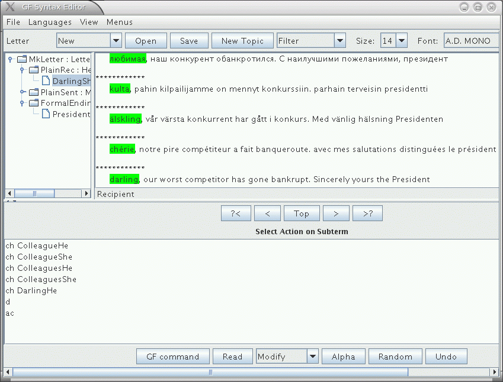

Aarne Ranta
3 September, 2007
Aarne Ranta
3 September, 2007
gf FoodIta.gf FoodEng.gf
parse "this cheese is very very Italian" | tree_bank
generate_random | l -multi
Bread : Kind ; -- in Food.gf
Black = {s = "bread"} ; -- in FoodEng.gf
Black = {s = "pane"} ; -- in FoodIta.gf
and start GF again with the same command. Now you can even translate
this bread is very Italian.
gfeditor Letter.gfcm
